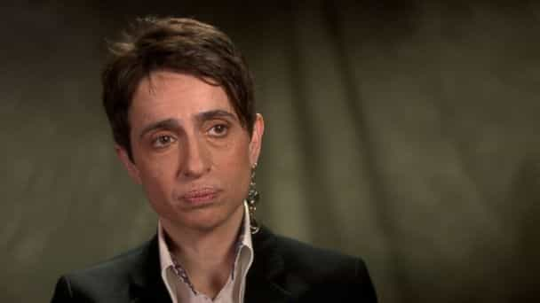
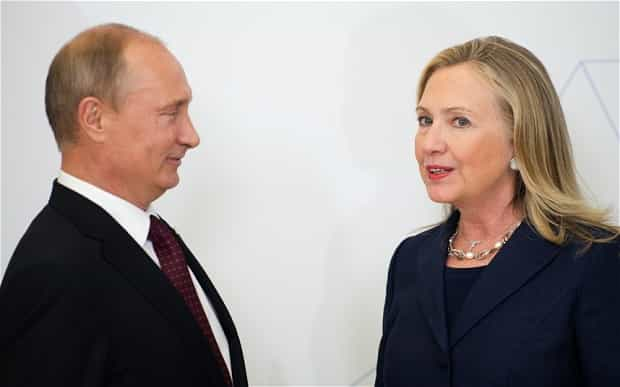

< < < Back
Hillary Clinton Supporters Are Attempting To Incite A Red Scare Against Russia – Return Of Kings
Red panic has gripped America once again, though the people stoking it are far different and their motivations more sinister. Following Wikileaks’ release of hacked emails from the Democratic National Committee—emails that revealed how the DNC rigged the party’s primary to elect Hillary Clinton and showed the extent to which the mainstream media functions as their official propaganda wing—the left tried to distract everyone from talking about their corruption by blaming Russia. No, seriously:
“We know that Russian intelligence services hacked into the DNC and we know that they arranged for a lot of those emails to be released and we know that Donald Trump has shown a very troubling willingness to back up Putin, to support Putin,” Clinton said in an interview with “Fox News Sunday.”
In the days after Wikileaks released the emails, leftists went berserk, claiming that the Russians were behind the hack (with no proof whatsoever), accusing Vladimir Putin of trying to influence the presidential election, and even accusing Donald Trump of being a Manchurian candidate for Moscow. Curiously, none of them have taken note of the multitude of other countries who are also sticking their hands into the American cookie jar, most notably Mexico, whose government has been funding riots at Trump’s rallies.
It’s quite telling that the only country that leftists don’t want influencing the government is a white, traditionalist, Christian one. The left’s anti-Russian hysteria isn’t simply repugnant: it’s a throwback to the anti-communist fervor of the early 1950’s. The difference is that while Joseph McCarthy’s claims that communists had infiltrated the government had validity, the left’s hatred of Russia is rooted entirely in their paranoia and hatred of healthy, prosperous societies.
The Left’s War On Russia

Masha Gessen, lesbian activist who agitates against Russia
Before and during the Cold War, leftists were in love with Russia. The Soviet Union represented the end goal of leftism: total state control over every aspect life. Because of this—and also because the Soviets extensively funded efforts to infiltrate Western institutions—the American and European left sided with Russia at every opportunity. For example, during World War II, leftists promoted the idea of opening a second front in Europe with the goal of taking pressure off of the Soviet Union, when the militarily smart move would have been to let the Nazis and Soviets destroy each other. The Normandy invasion was completely unnecessary; all it did was enable the U.S.S.R. to colonize much of eastern Europe.
Similarly, in the 1950’s, leftists in the media and government smeared Senator Joseph McCarthy when he courageously pointed out that Soviet agents were deeply embedded in the State Department and other prominent federal agencies. The Venona Papers—a collection of decrypted messages from the Soviet Union’s intelligence agencies released in 1995—later vindicated many of McCarthy’s claims. Later, in the 1980’s, leftists vociferously opposed Ronald Reagan’s aggressive stance towards the U.S.S.R., claiming it would lead to war; Ted Kennedy even begged the Russians to intervene in the 1984 presidential election and help defeat Reagan (irony).
The love between the Western left and Russia died when the Soviet Union collapsed. Since the end of the Cold War, Russia has transformed itself from a failed socialist state into a patriarchal, traditionalist one, reasserting its place as a world power. Christianity has been revived and takes a central role in Russian life, open homosexuality is frowned upon, and George Soros-funded front groups have been banned from the country. The reason why Russian (and other eastern European) women are known for their femininity and beauty is because these nations resist the moral turpitude of the West.
All this naturally makes Russia an enemy of the degenerate left. Anti-Russian feelings among leftists exploded in 2012, when members of Pussy Riot, a Western-funded leftist agitator group, were arrested after they broke into an Orthodox church and disrupted a mass in process. Leftists began foaming at the mouth a year later when the Russian government formally banned homosexuals from distributing propaganda to minors. When Russia began attacking ISIS last year—and actually made progress towards dismantling the Islamic State—Barack Obama shit a brick and “moderate” Republicans such as John Kasich and Lindsey Graham began speaking of war with Russia.
The left’s fear of Russia is simply their fear of normality, of white heterosexual men taking back what’s theirs. They’re aided by clueless cuckservatives who still think the Cold War is on and Russia is the Red Menace. Additionally, a large number of Russian Jews in the American political establishment, such as neocon Max Boot (a prominent #NeverTrump Republican) and radical lesbian activist Masha Gessen, have spent their careers agitating for more conflict with Russia. (Ilya Sheyman, another Russian Jew, is the head of MoveOn.org, which was behind the riot that shut down Donald Trump’s rally in Chicago last March.)
World War Gay

Common Filth and other commentators have quipped in the past that the U.S. will start World War III with Russia over the issue of gay rights, and those predictions are disturbingly close to coming true. The left’s irrational hatred of Russia combined with our constant meddling in their internal affairs (for example, see Ukraine, where we helped instigate an anti-Russian coup right in their backyard) ensure that tensions with Putin will continue to escalate.
This is lunacy. Beyond the fact that Russian society is one that we should aspire to emulate, Russia is a superpower with a nuclear arsenal. Vladimir Putin is not some tinpot potentate of a third-world hellhole; he’s a crafty leader with a strong military and a nation of hundreds of millions behind him. Hillary Clinton will almost assuredly escalate tensions with Russia, possibly bringing us to war, destroying what is left of America with it.
The left hopes to distract Americans’ from the Democrats’ corruption and malfeasance by ginning up a Red Scare 2.0, and we can’t let them get away from it. Leftists’ hatred of Russia, combined with the apocalyptic ramifications of war with Putin, are too significant to ignore.
Read More: Why Vladimir Putin Is Russia’s Proto-Tsar